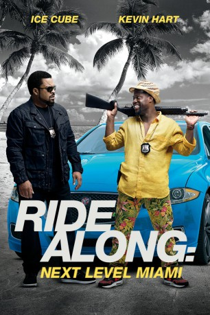
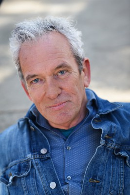
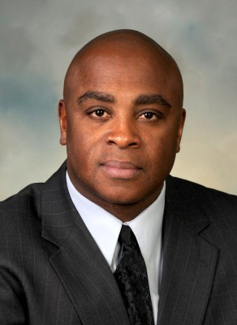

#5186 Ride Along: Next Level Miami
Alternativ: Ride Along 2
 
 IMDB-Wertung: 5.9 / 10
IMDB-Wertung: 5.9 / 10  Metascore: 0
Metascore: 0 
Der Cop James Payton und der Ex-Wachmann Ben Barber sind als Ermittler-Duo zurück. Ihre Beziehung wurde zunächst auf eine harte Probe gestellt. Als Ben um die Hand von James' Schwester Angela anhielt, musste dieser den potentiellen Familienzuwachs erst auf Herz und Nieren prüfen. Nun, nachdem ein turbulentes Abenteuer die ungleichen Gesetzeshüter halbwegs zusammengeschweißt hat, müssen die beiden, mit der nahenden Hochzeit von Ben und Angela im Hinterkopf, einen weiteren heiklen Fall lösen. Die Aufgabe führt James und den frischgebackenen Polizisten Ben nach Miami. Dort sollen sie einen berüchtigten Drogenring zu Fall bringen, an dessen Spitze der einflussreiche Pope steht. Unterstützung vor Ort bekommen sie von ihrer toughen Kollegen Maya und dem chaotischen Computerhacker A.J.
Jahr: 2016
Dauer: 101 Minuten
FSK: 12
Land: USA Studio: Universal PicturesTonspuren: DTS - ,
Untertitel: Deutsch,
Auflösung: 1080p (1920x800) Größe: 4741 MB
Genre: Action, Komödie
Regisseur: Tim Story
Drehbuch: Ant Timpson
Soundtrack:
Darsteller:
 Ice Cube als James Payton
Ice Cube als James Payton Kevin Hart als Ben Barber
Kevin Hart als Ben Barber Tika Sumpter als Angela Payton
Tika Sumpter als Angela Payton Benjamin Bratt als Antonio Pope
Benjamin Bratt als Antonio Pope- Olivia Munn als Maya
 Ken Jeong als AJ
Ken Jeong als AJ Bruce McGill als Lt. Brooks
Bruce McGill als Lt. Brooks Michael Rose als The Hitter / Gates
Michael Rose als The Hitter / Gates Sherri Shepherd als Cori
Sherri Shepherd als Cori- Arturo del Puerto als Alonso
 Eric Goins als Assface
Eric Goins als Assface Carlos Gómez als Captain Hernandez
Carlos Gómez als Captain Hernandez Utkarsh Ambudkar als Amir
Utkarsh Ambudkar als Amir Glen Powell als Troy
Glen Powell als Troy Nadine Velazquez als Tasha
Nadine Velazquez als Tasha- Bresha Webb als Shayla
- Michelle Pieroway als Bikini Shop Customer
-  James Martin Kelly als Port Commissioner Griffin
 Robert Pralgo als Port Commissioner Nuñez
Robert Pralgo als Port Commissioner Nuñez Tyrese Gibson als Mayfield
Tyrese Gibson als Mayfield- Ricky Russert als Troy's #2
- Christopher Johnson als Troy's #3
- David J. Porras als Party Door Guard
- Derek Carver als Party Security Guard
 Jay Amor als Little Havana Dad
Jay Amor als Little Havana Dad Rey Hernandez als El Republico Security
Rey Hernandez als El Republico Security- Rachel Faulkner als Hostess
- Liz Godwin als Club Girl
- Yolanda Adams als Preacher
- Jennifer Badger als Latina Girl
- Christina De Leon als Drunk Woman
- Ana Ayora als Server
- Ace Marrero als Doorman
- Junes Zahdi als Dancer
- Freddie Poole als Guard
- Josh Diogo als Guard
- Donny Carrington als Guard
- Jabari Simba als Guard
 Kati Akins als VIP Club Girl , uncredited
Kati Akins als VIP Club Girl , uncredited- D'Kia Anderson als Hostess #2 , uncredited
 Lucius Baston als Ballsdeep23 , uncredited
Lucius Baston als Ballsdeep23 , uncredited- Stacey Bender als Party Guest , uncredited
- Knox Bentley als Party Guest , uncredited
 Tamila Bilalova als Bikini Model , uncredited
Tamila Bilalova als Bikini Model , uncredited- Chris Bosh als Himself , uncredited
-  Tommy Brown als Businessman , uncredited
- Santos Caraballo als Santeria Vendor , uncredited
- Evan Charles als Football Player , uncredited
- Massiel Checo als Bikini Girl , uncredited
 Raul Colon als Pope Security , uncredited
Raul Colon als Pope Security , uncredited
Datei: X:\2-Dilogie(N-Z)\Ride Along\Ride Along Next Level Miami (2016, FSK12, 1920x800).mkv seit 28.12.2016
Festplatte: HD Collection-2(A-Z)-3(A-M)
 Alle Filme aus Gruppe '2-Dilogie(N-Z)\Ride Along'
Alle Filme aus Gruppe '2-Dilogie(N-Z)\Ride Along'
- Ride Along
- Ride Along: Next Level Miami (der aktuelle Film)